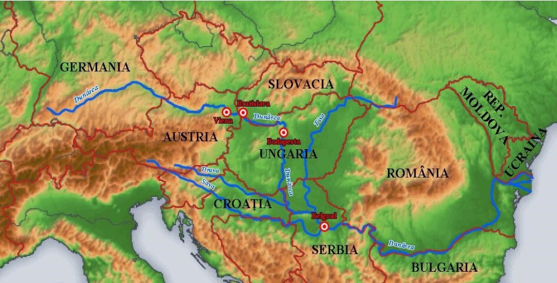

Fig. 57 – Traseul Dunării de la izvor la vărsare
Izvorăște din Munții Pădurea Neagră (Germania), al doilea fluviu ca lungime din Europa după Volga având ~ 2860 km, traversează 10 țări și 4 capitale: state - Germania, Austria - Viena, Slovacia - Bratislava, Ungaria - Budapesta, Croația, Serbia - Belgrad, România, Bulgaria, Republica Moldova și Ucraina.
Bazinul hidrografic
Bazinul hidrografic al Dunării de peste 8000 km², reprezintă 8% din suprafața Europei. Are un regim de scurgere complex, care îi asigură o creștere permanentă a debitului. Dacă la Viena debitul Dunării se apropie de 2000 m³/s, la Belgrad 3000 m³/s, iar în țara noastră peste 6000 m³/s. Regimul de scurgere complex se datorează faptului că traversează mai multe tipuri de climă și mai multe unități de relief.
Traseul Dunării
Traseul Dunării de la izvor la vărsare este împărțit în 3 sectoare:
Sectorul superior: cuprins între izvor și Viena, unde Dunărea adună râuri scurte și repezi cu o vale îngustă și adâncă cum ar fi Innul și Emsul (Austria);
Sectorul mijlociu: cuprins între Viena și Baziaș, unde Dunărea adună cei mai importanți afluenți Sava, Drava, Morava, Tisa;
Sectorul inferior: cuprins între Baziaș și Sulina, unde Dunărea primește Jiul, Oltul, Argeșul etc.
Traseul românesc al Dunării
Dunărea intră în țară în dreptul localității Baziaș, pe teritoriul țării parcurge 1075 km, ceea ce reprezintă aproximativ 38% din lungimea ei. Traseul românesc al Dunării este împărțit în 4 sectoare:
Sectorul Baziaș - Porțile de Fier I: se numește și Defileul Dunării, o vale îngustă, mărginită de pereți abrupți. Pentru a ridica nivelul fluviului, facilitând navigația, s-a construit Sistemul Hidroenergetic și de Navigație - Porțile de Fier.
Sectorul Porțile de Fier I - Călărași: numit și Lunca Dunării, valea este foarte largă și puțin adâncă. S-a construit Sistemul Hidroenergetic Porțile de Fier II, după Drobeta Turnu Severin; apa Dunării este folosită și pentru irigații.
Sectorul Călărași - Brăila: numit și Sectorul Bălților, aici Dunărea se desparte de două ori în câte două brațe, care închid în interior două teritorii în trecut mlăștinoase, iar astăzi importante zone agricole.
Sectorul Brăila - Sulina: numit și Dunărea maritimă, deoarece aici pot circula nave cu un tonaj mare, care vin din Marea Neagră. Circulația se realizează pe brațul Sulina, care este permanent dragat (înlăturarea aluviunilor).